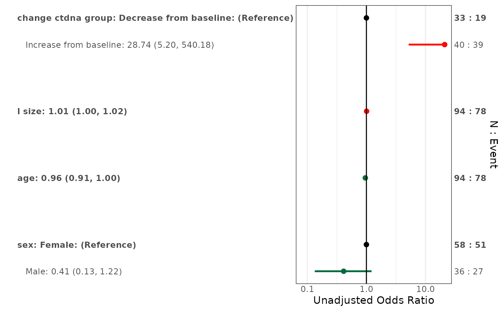

forestplotUV.RdThis function creates forest plots from univariable regression models. For new code, consider using forestplotMV() which can handle both adjusted and unadjusted estimates.
forestplotUV(
response,
covs,
data,
model = "glm",
id = NULL,
corstr = NULL,
family = NULL,
digits = getOption("reportRmd.digits", 2),
conf.level = 0.95,
colours = "default",
showEst = TRUE,
showRef = TRUE,
logScale = getOption("reportRmd.logScale", TRUE),
nxTicks = 5,
showN = TRUE,
showEvent = TRUE,
xlim = NULL
)character vector with names of columns to use for response
character vector with names of columns to use for covariates
dataframe containing your data
fitted model object (default "glm")
character vector which identifies clusters. Only used for geeglm
character string specifying the correlation structure. Only used for geeglm
description of the error distribution and link function to be used in the model
number of digits to round to (default 2)
controls the width of the confidence interval (default 0.95)
can specify colours for risks less than, equal to, and greater than 1.0. Default is green, black, red
logical, should the risks be displayed on the plot in text? Default is TRUE
logical, should reference levels be shown? Default is TRUE
logical, should OR/RR be shown on log scale? Defaults to TRUE
Number of tick marks for x-axis (default 5)
Show number of observations per variable and category (default TRUE)
Show number of events per variable and category (default TRUE)
numeric vector of length 2 specifying x-axis limits (ex c(0.2, 5)) Confidence intervals extending beyond these limits will be shown with arrows.
a ggplot object
data("pembrolizumab")
forestplotUV(response = "orr",
covs = c("change_ctdna_group", "sex", "age", "l_size"),
data = pembrolizumab, family = 'binomial')
#> Warning: Vectorized input to `element_text()` is not officially supported.
#> ℹ Results may be unexpected or may change in future versions of ggplot2.
#> Note: Very wide confidence intervals detected. X-axis capped for readability.
#> `height` was translated to `width`.
